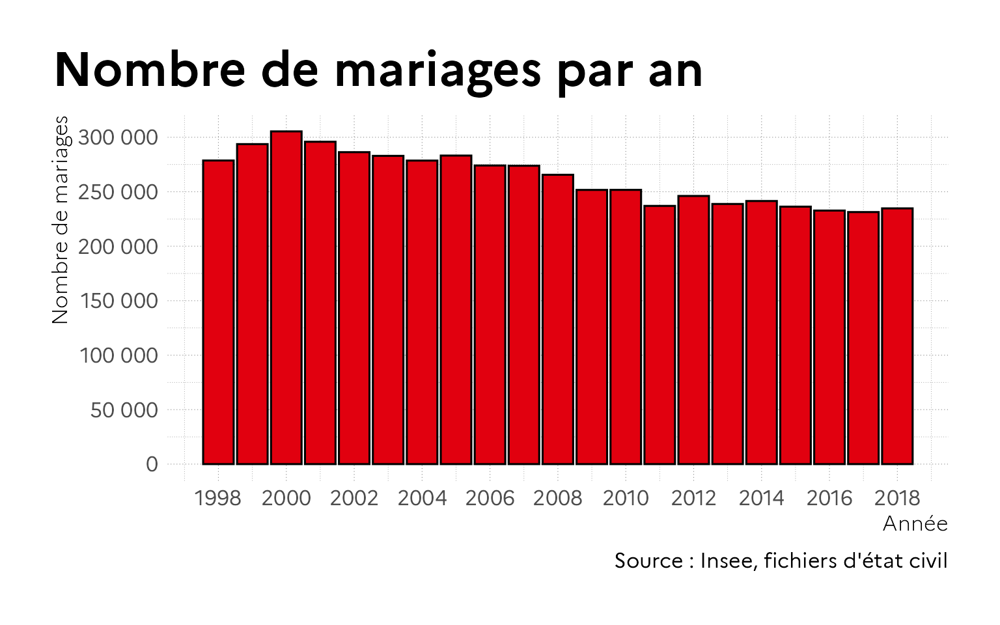
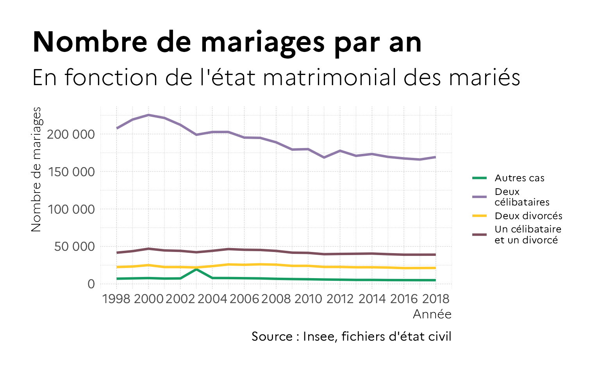
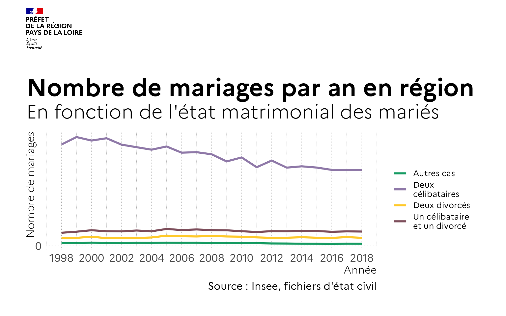
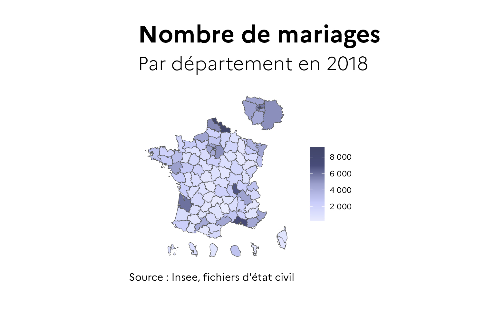
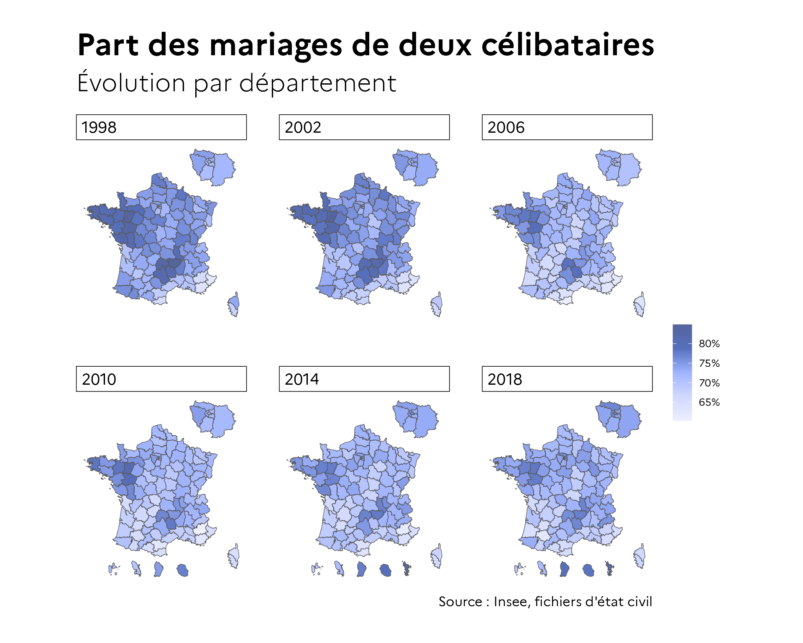

Cette vignette vous montre la réalisation de quelques types de graphiques à l’aide de gouvdown. Les données présentées sont issues des fichiers de l’état civil sur les mariages de 1998 à 2018, mis à disposition par l’Insee sur son site (https://www.insee.fr/fr/statistiques?taille=100&debut=0&theme=4&categorie=3&collection=4). Elles ont été compilées et mises en cohérence.
Import des données
On charge les données, composées d’un croisement année / département / état matrimonial antérieur recodé. On importe aussi un fond de carte départemental.
file_data <- system.file("extdata", "df_mariages_etat_dep_an.rds", package = "gouvdown")
file_geo <- system.file("extdata", "shp_dep", "FR_DEP_DOM_IDF.shp", package = "gouvdown")
df_mariages_etat_dep_an <- read_rds(file_data)
shp_dep <- st_read(file_geo)
#> Reading layer `FR_DEP_DOM_IDF' from data source
#> `/Users/runner/work/_temp/Library/gouvdown/extdata/shp_dep/FR_DEP_DOM_IDF.shp'
#> using driver `ESRI Shapefile'
#> Simple feature collection with 109 features and 3 fields
#> Geometry type: MULTIPOLYGON
#> Dimension: XY
#> Bounding box: xmin: 99040 ymin: 5988964 xmax: 1242444 ymax: 7284746
#> Projected CRS: Lambert_Conformal_ConicGraphiques
Ce fichier permet de réaliser un diagramme en barres du nombre de mariages par an au niveau national. Pour plus de visibilité, on choisit de colorer les barres en rouge à l’aide des codes couleurs présents dans la fonction gouv_colors(). L’utilisation de theme_gouv() permet simplement d’apposer l’identité graphique.
À noter qu’il faut que les polices Marianne et Spectral soient installées.
df_mariages_etat_dep_an %>%
group_by(amar) %>%
summarise(n = sum(n)) %>%
ggplot(aes(x = amar, y = n)) +
geom_col(fill = gouv_colors("rouge_marianne"), color = "black") +
scale_x_continuous(name = "Année", breaks = seq(1998, 2018, 2)) +
scale_y_continuous(
name = "Nombre de mariages",
breaks = seq(0, 350000, 50000),
labels = scales::label_number(big.mark = " ")
) +
labs(title = "Nombre de mariages par an",
caption = "Source : Insee, fichiers d'état civil") +
theme_gouv()
De façon similaire, on peut réaliser un graphique en ligne sur des évolutions du nombre de mariages par type d’état matrimonial. On utilise ici scale_color_gouv_discrete() en précisant la palette à utiliser pour avoir les bonnes couleurs.
plot_etamat_type <- df_mariages_etat_dep_an %>%
group_by(amar, etamat_type) %>%
summarise(n = sum(n)) %>%
ggplot(aes(x = amar, y = n, color = str_wrap(etamat_type, 15))) +
geom_line(size = 1.1) +
scale_x_continuous(name = "Année", breaks = seq(1998, 2018, 2)) +
scale_y_continuous(
name = "Nombre de mariages",
breaks = seq(0, 350000, 50000),
labels = scales::label_number(big.mark = " ")
) +
scale_color_gouv_discrete(name = "", palette = "pal_gouv_qual2") +
labs(title = "Nombre de mariages par an",
subtitle = "En fonction de l'état matrimonial des mariés",
caption = "Source : Insee, fichiers d'état civil") +
theme_gouv()
plot_etamat_type
Pour un usage des graphiques hors publication (usage seul ou dans une présentation par exemple), on peut choisir d’y apposer la Marianne. La fonction add_plot_header() permet de le faire simplement.
plot_etamat_type %>%
add_plot_header(gglogo("marianne"), ratio = 8)
Ainsi, décliner un graphique national sur son territoire pour un service régional de l’État devient très simple. Il suffit de filtrer les données en entrée, et de changer le logo.
plot_etamat_type <- df_mariages_etat_dep_an %>%
filter(depmar %in% c('44','49','53','72','85')) %>%
group_by(amar, etamat_type) %>%
summarise(n = sum(n)) %>%
ggplot(aes(x = amar, y = n, color = str_wrap(etamat_type, 15))) +
geom_line(size = 1.1) +
scale_x_continuous(name = "Année", breaks = seq(1998, 2018, 2)) +
scale_y_continuous(
name = "Nombre de mariages",
breaks = seq(0, 350000, 50000),
labels = scales::label_number(big.mark = " ")
) +
scale_color_gouv_discrete(name = "", palette = "pal_gouv_qual2") +
labs(title = "Nombre de mariages par an en région",
subtitle = "En fonction de l'état matrimonial des mariés",
caption = "Source : Insee, fichiers d'état civil") +
theme_gouv()
plot_etamat_type %>%
add_plot_header(gglogo("prefecture_r52"), ratio = 20)
Cartes
Pour les cartes, on préférera l’utilisation de theme_gouv_map() qui est plus adapté.
shp_dep %>%
left_join((
df_mariages_etat_dep_an %>%
filter(amar == 2018) %>%
group_by(depmar) %>%
summarise(n = sum(n))
),
by = c("INSEE_DEP" = "depmar")
) %>%
ggplot(aes(fill = n)) +
geom_sf() +
scale_fill_gouv_continuous(name = "",
palette = "pal_gouv_g",
reverse = TRUE,
breaks = seq(0, 10000, 2000),
labels = scales::label_number(big.mark = " ")) +
labs(title = "Nombre de mariages",
subtitle = "Par département en 2018",
caption = "Source : Insee, fichiers d'état civil") +
theme_gouv_map()
Il est bien sûr aussi possible de réaliser des cartes en facettes.
shp_dep %>%
left_join((
df_mariages_etat_dep_an %>%
filter(amar %in% seq(1998, 2018, 4)) %>%
group_by(amar, depmar) %>%
mutate(part = n / sum(n)) %>%
filter(etamat_type == "Deux célibataires")
),
by = c("INSEE_DEP" = "depmar")
) %>%
ggplot(aes(fill = part)) +
geom_sf() +
scale_fill_gouv_continuous(
name = "",
palette = "pal_gouv_f",
reverse = TRUE,
breaks = seq(0, 1, 0.05),
labels = scales::label_percent(accuracy = 1)
) +
facet_wrap(vars(amar), nrow = 2) +
labs(title = "Part des mariages de deux célibataires",
subtitle = "Évolution par département",
caption = "Source : Insee, fichiers d'état civil") +
theme_gouv_map()